May
Hair in two round buns, sparkly eyes, and a dress. She loves dancing, and when she spins, her friends float. "It's kind of just fun to watch."
Practice pictures of the four kids and the places in the story so far. Colors and details are guesses where the team hasn't decided yet. Anything here can be changed, or swapped out for the kids' own drawings.
Hair in two round buns, sparkly eyes, and a dress. She loves dancing, and when she spins, her friends float. "It's kind of just fun to watch."
Spiky hair, star shirt, shorts. His purple oval turns into a room he can hide in, and he takes it everywhere.
Messy hair, big smile, loves soccer more than anything. His ball glows when he kicks it, and nobody knows why. He carries a second ball under his arm, because he wants a bunch of balls.
A ballerina with pigtails, sparkly eyes, and a purple tutu. Sometimes when she spins, her tutu glows really strong and makes a friend float. The kids want to find out why.
All the bad guys work together as a team, with the wizard.
Drawn by the kids in drawing 8: a flat purple hat, curly grey hair, a big nose, a long grey beard, a smile, and a huge purple robe with wide, jagged sleeves. The kids go to him to find out why Jasin's ball glows. He seems helpful, but he's secretly the bad guy. He was already sneaky back in Los Angeles, and now he's waiting at the secret castle, ready to defeat the kids.
Drawn by the kids in drawing 6: a green face, a long pointy nose, jagged teeth, long grey hair, a little purple hat, a big jagged purple dress, and long green arms with spiky fingers. She's on the bad guy team with the wizard. She lives in a swamp near the entrance of the wizard's castle, in a house on bird legs, with an apprentice who rides a boat on the swamp. She has a wand, and she secretly tries to trap the kids in her swamp with it.
Drawn by the kids in drawing 7, labeled "A ping-pong bad guy drinking beer in his left hand." He has a grumpy face, black hair, a short brown shirt with his hairy belly sticking out, red shorts, a ping-pong paddle in one hand, and a mug in the other. He's on the bad guy team, and he hits people with his ping-pong paddle. The kids meet him at the creepy ping-pong station, in the middle of a mountain.
Drawn by the kids in drawing 10: a small figure in a pointy hat, riding a little boat on the witch's swamp. He starts out bad, but he'll become good. Later in the story he starts to feel for the kids and ends up on their side.
His name: ask the kidsThese are the real art. The sample pictures above copy their ideas.
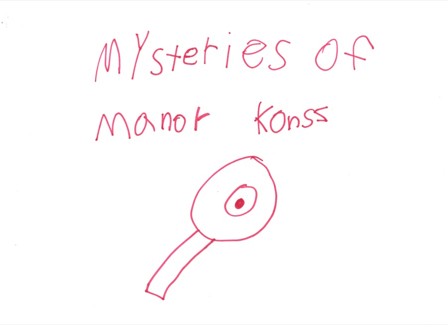
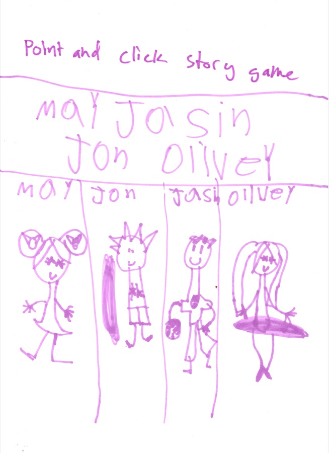
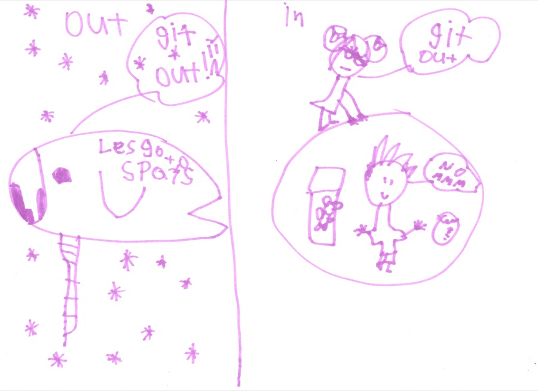
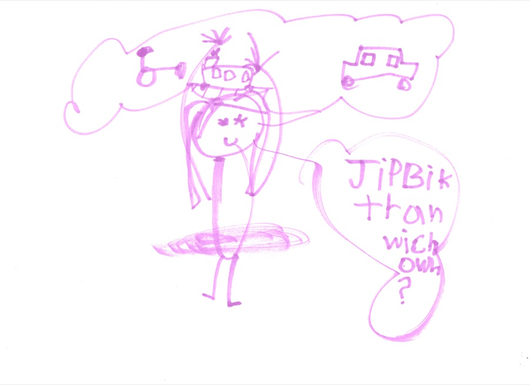
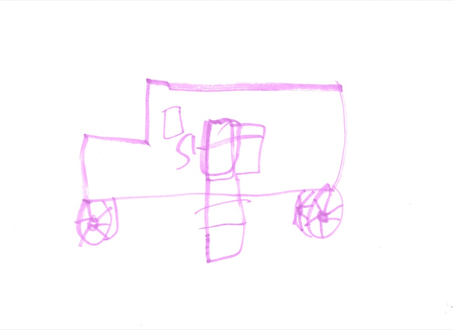
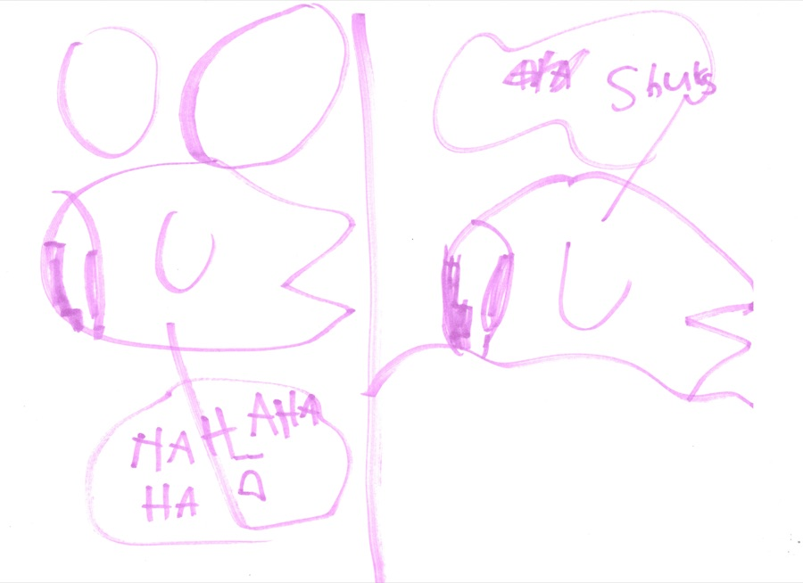
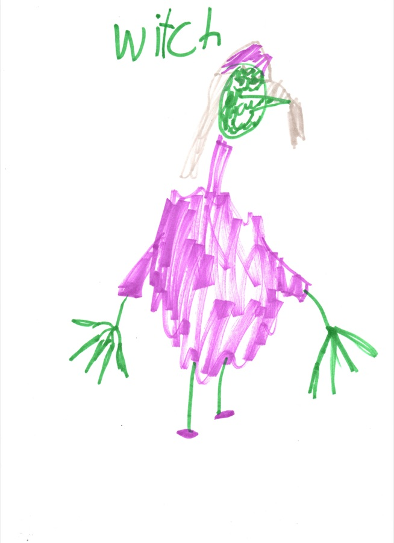
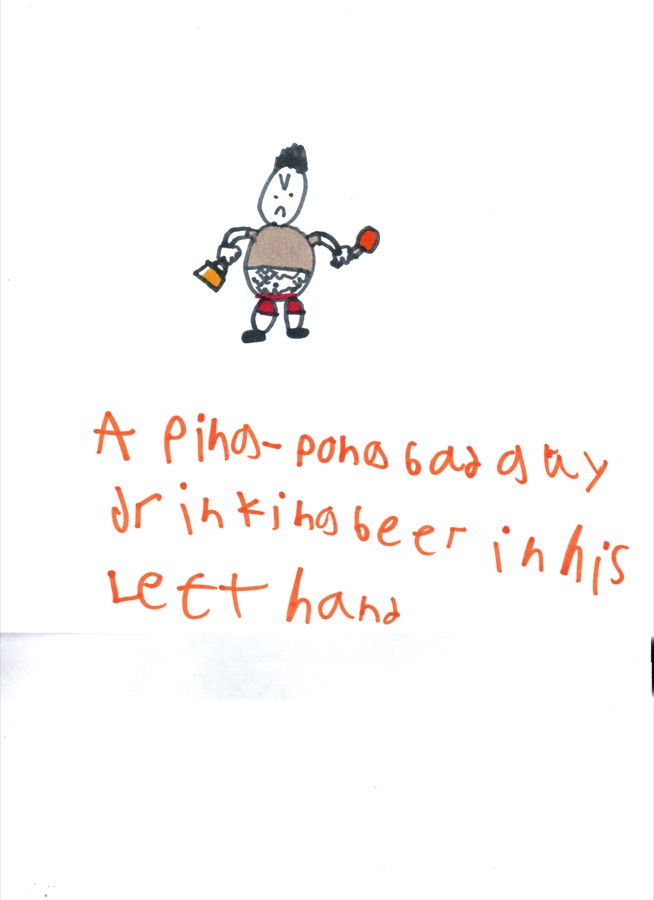
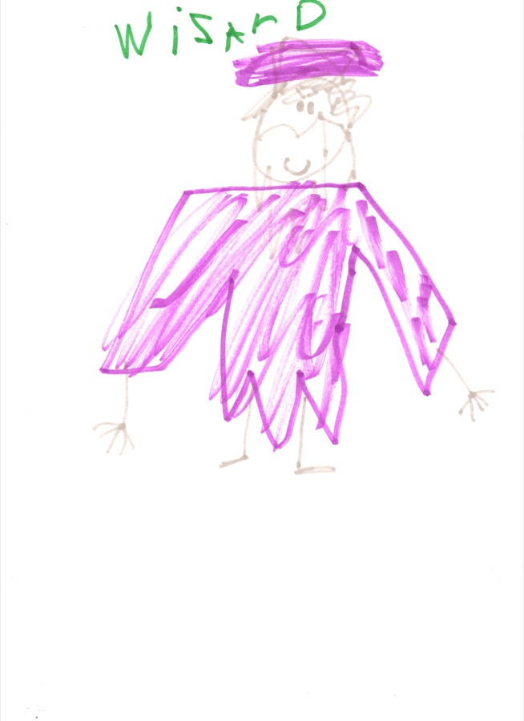
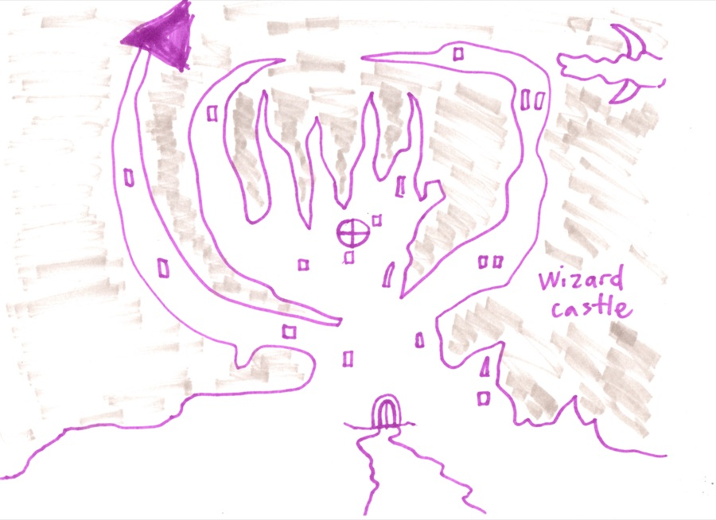
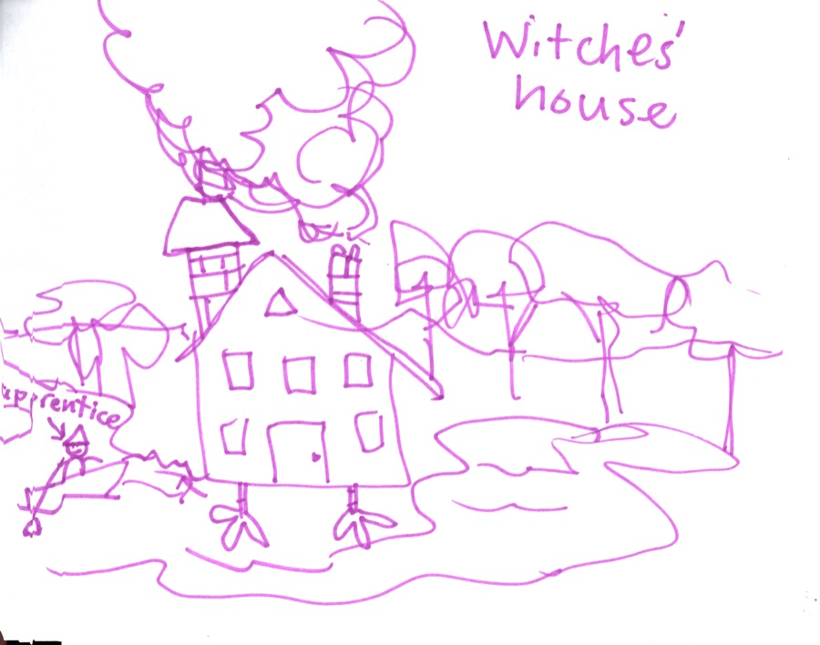